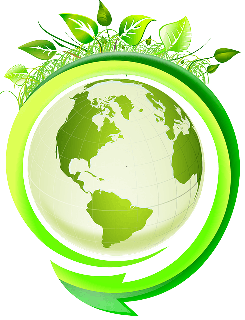

Et toi, tu veux quel futur ?
Notre écosystème
Nous évaluons pour chacune de nos actions, d'une part son cycle de vie complète (conception, fabrication, utilisation, transformation) et d'autre part son impact sur l'écosystème concerné.
Nous privilégions le temps long: Concertation large, formulation précise de la problématique et application d'une solution par itération (Boucle expérimentation-rectification).
Nous valorisons chaque ressource : Limiter la production en réadaptant l'éxistant, traiter les "déchets" comme du potentiel et générer de multiples bénéfices à partir d'un seul processus.
Nous nous connectons aux "périphériques" et contextes à rique, puisqu'ils sont source d'innovation.
Nous défendons la diversité et la modularité des réponses apportées.